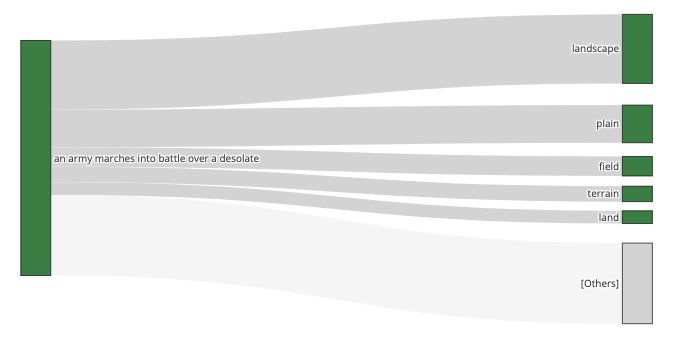
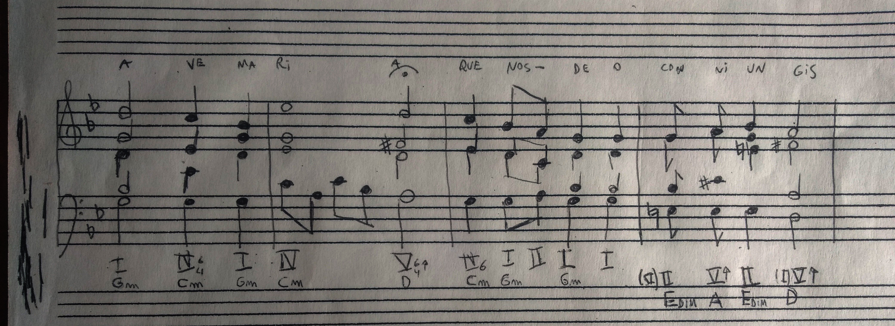
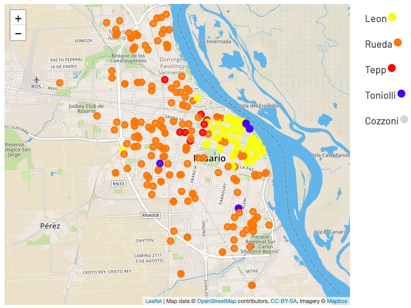

We need OpenAI to digitally sign their API
responses
If you shoot ChatGPT with the same prompt twice, you will get
different answers. That is by design and probably well intended, but
it makes OpenAI unaccountable. Since you cannot reproduce a past
response, you cannot convince others that you got a certain answer.
Continue Reading »
Can an AI like ChatGPT produce original content?
It is often said that an AI like ChatGPT can't produce original
material or original knowledge. The reason given is that it feeds
from already existing material or knowledge that has been already
produced ...
Continue Reading »
ChatGPT as a garden of forking paths

The text completion model under ChatGPT is optimized for one thing.
Given a text, generate the word that comes next (actually, the next
token). Under the hood, every time ChatGPT generates the continuation of
a text, it offers several options, each accompanied by a probability
of how likely it is to come ...
Continue Reading »
A poetry-based blockchain

At the height of an empire, which name is long lost in the sands of
time, the sophistication and refinements of its court were
unparalleled. Hundred of poets devoted their lives to weaving the
most complex verses together...
Continue Reading »
A homemade Sundial


In elementary school I told a friend that every day I was woken up by a sunbeam that filtered through
the window and landed right on my eyes. Of course, it was a lie. It happened only once and at that moment
I felt the need to make my story more exciting. The Sun takes a different path every day. The first day of October
at 9:00 am the sunbeam passed trough my bed and the first of September the sunbeam went through my bed table.
Since the shadow of the window moves as the hours goes by and every day it goes trough a different path
it is possible to make a clock. It is the basic principle of every sundial.
How hard could it be to make a sundial?
Continue Reading »
Interactive Bitcoin Explainer
Want to understand how to get some bitcoin?
try this toy coin »
Four part harmony voice leading bot

Tired of having to avoid parallel fourths ?
try the voice leading bot »
or
play auto arranged chords »
Political Geography: Mapping election results in my home city

Visualization of election results by voting location, for the 2019 general elections in Rosario, Argentina.
Warning: spanish ahead: »